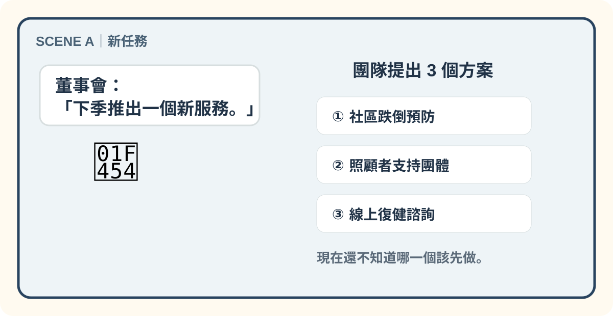
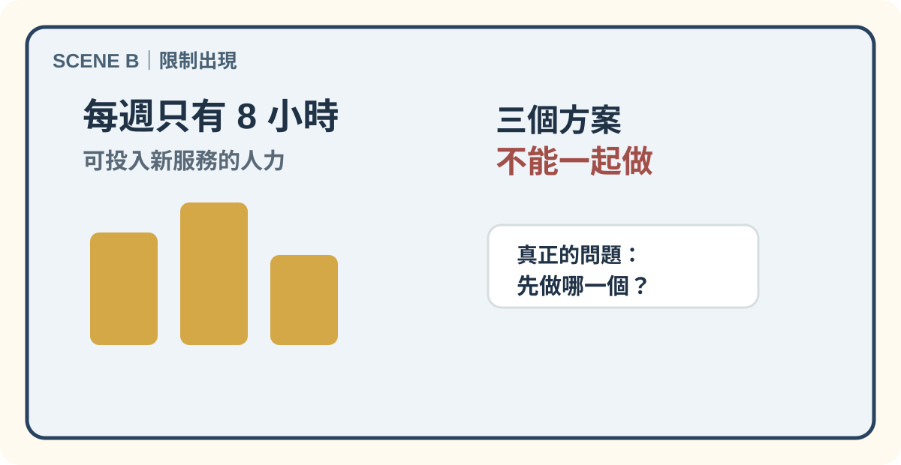
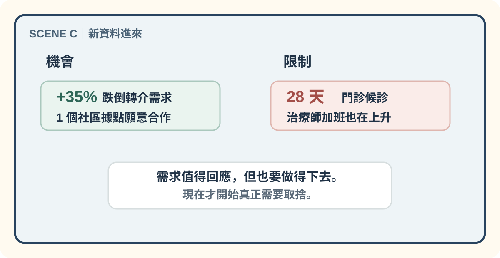
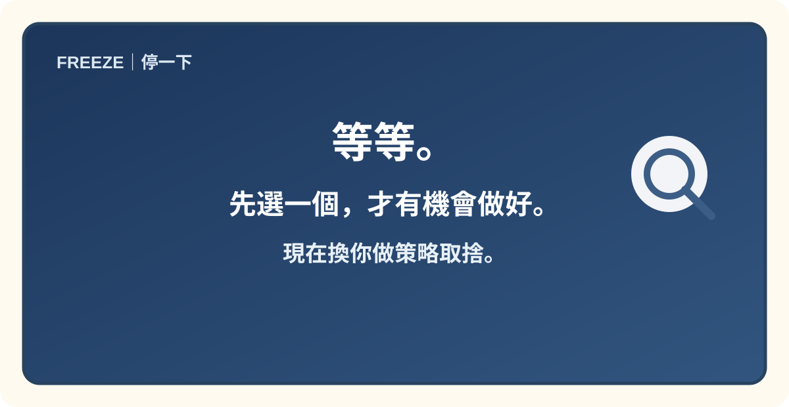

SCENE 01 · 策略現場
下一季只能做一件事，你會怎麼選？
這次不要一次塞滿所有資訊。跟著 4 幕情境慢慢看，先把任務、選項、限制與新資料分開整理。

先不要選。目前你只知道：有一個新任務，而且三個方案都看起來有道理。

第一個限制出現。策略開始不是「哪個最有趣」，而是「在這個資源下，哪個值得先做」。

現在要同時看兩邊。一邊是需求與合作機會；另一邊是人力與既有服務負荷。

🧭 你現在已經有足夠線索開始判斷：不是找「最理想」，而是找「此刻最合理」。
TASK 01 · 先抓大方向
這個案例最核心的管理問題是什麼？
選出目前最精準的描述。
TASK 02 · 蒐集策略線索
哪些資訊最值得放進決策裡？
點擊卡片，把你認為重要的策略線索收進筆記。至少找出 4 個。
📒 我的策略筆記
- 尚未收集任何線索。
TASK 03 · 把線索串起來
現在，哪一種策略方向比較合理？
🔗 先把目前資訊串成一條判斷鏈
A｜目標下季推出一個新服務，但只能先試一個。
→
B｜線索跌倒預防需求正在上升，且已有合作據點。
→
C｜限制每週 8 小時，人力負荷已高，不能三個一起做。
TASK 04 · 試辦成功，下一步呢？
數字變好，不代表立刻放大十倍。
試辦結果參與率 72%，完成者指標改善。
新問題治療師加班上升 24%，交通與行政協調很耗時。
壓力測試董事會希望下個月直接擴到 10 個據點。
🧠 進階思考：策略不是只有「有沒有效」，還要問「能不能持續」。真正成熟的擴充決策，要把效果與成本一起放進來看。
CASE 001｜正式結案
🗂️ 管理決策卷宗FILE #001
🔎 目前最合理的策略路徑
先選擇一個可試辦、可追蹤、可修正的方案，並在試辦後同時檢視成效與負荷，再決定是否分階段擴充。
這一局的核心不在於「選最厲害的方案」，而在於：先界定目標，再把需求、合作條件、資源限制與後續成本放進同一個決策裡。
⚠️ 還不能太快下結論。
一次試辦只能告訴你「這個方向值得繼續」，不能直接推論成「可以不加修正就全面複製」。管理上的下一步，通常不是慶祝結束，而是進入下一輪修正。
一次試辦只能告訴你「這個方向值得繼續」，不能直接推論成「可以不加修正就全面複製」。管理上的下一步，通常不是慶祝結束，而是進入下一輪修正。
CASE 001 · CLOSED
真正的策略，不是找到看起來最漂亮的答案，而是在限制下做出可以承擔的選擇。
你已完成：核心問題辨識、策略線索蒐集、方案比較與擴充決策。
使用提醒｜這是一個管理學概念學習作品，重點是練習如何整理資訊與做出取捨，不代表現場一定只有單一正解。真實決策仍需結合脈絡、資源與後續追蹤。